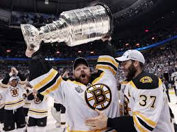
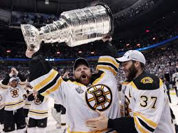

When it comes to my hobbies there really is not much to know. When I am not at school, doing homework or sleeping I am most likely either working or working out. I work in Shrewsbury at a Tennis Club teaching little kids and also adults how to play tennis. This is the perfect job for me as I love to play tennis and am pretty good at it. Working out is also my big hobby. I workout six days a week for at least an hour. Making sure to keep my body strong and healthy.
When it comes to motivation with working out this much I always try to remember where I came from and how I used to look and feel. This pushes me becuase when I was younger I was a chunkier kid and I know now that is not what I want to look like anymore.
Another one of my hobbies is making sure I watch every Boston Bruins game live. Over the last six years The only reason I have missed watching a game live is because I was working. It is safe to say the Bruins are my addiction, as I have a pretty significant tattoo of the Bruins symbol on my back. GO BRUINS!